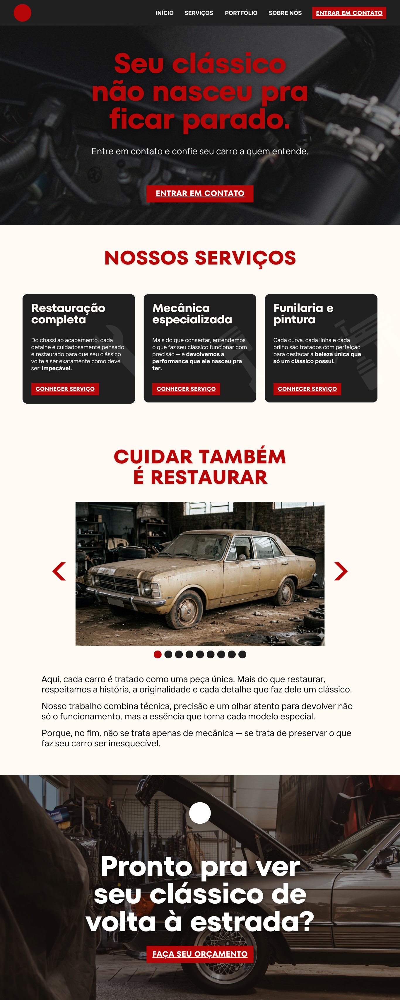

01 — Landing Page
Classic Car Restorer
A landing page for an automotive brand focused on restoring classic cars. I went with black and red to keep it bold and mechanical, paired with a heavy, condensed typeface that gives the layout some weight. The abandoned car in the showcase section ties it all together — restoring is also a way of caring.
Personal project — still in development